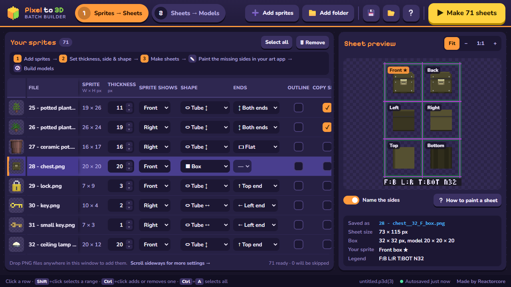
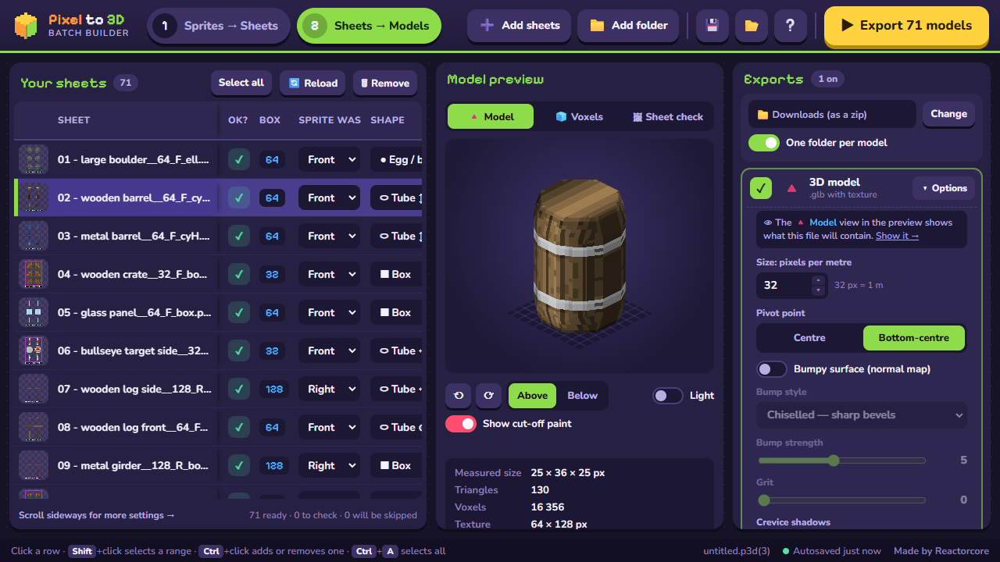
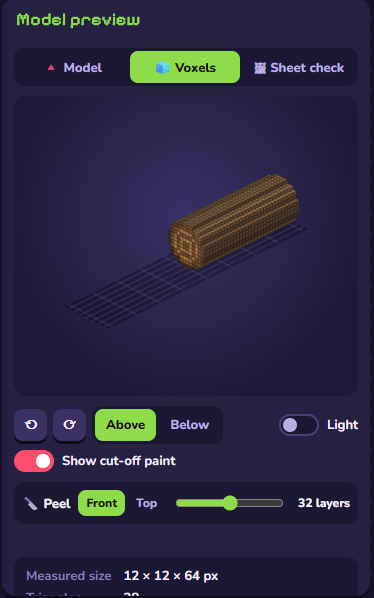
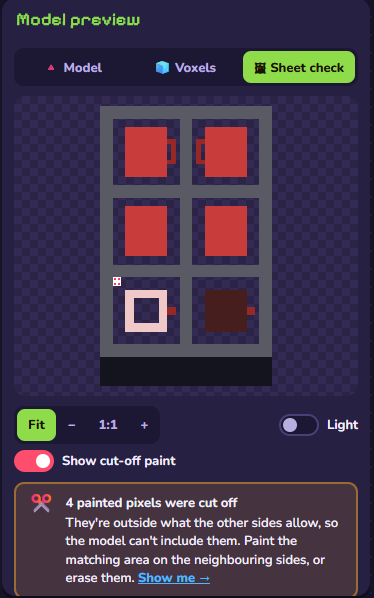
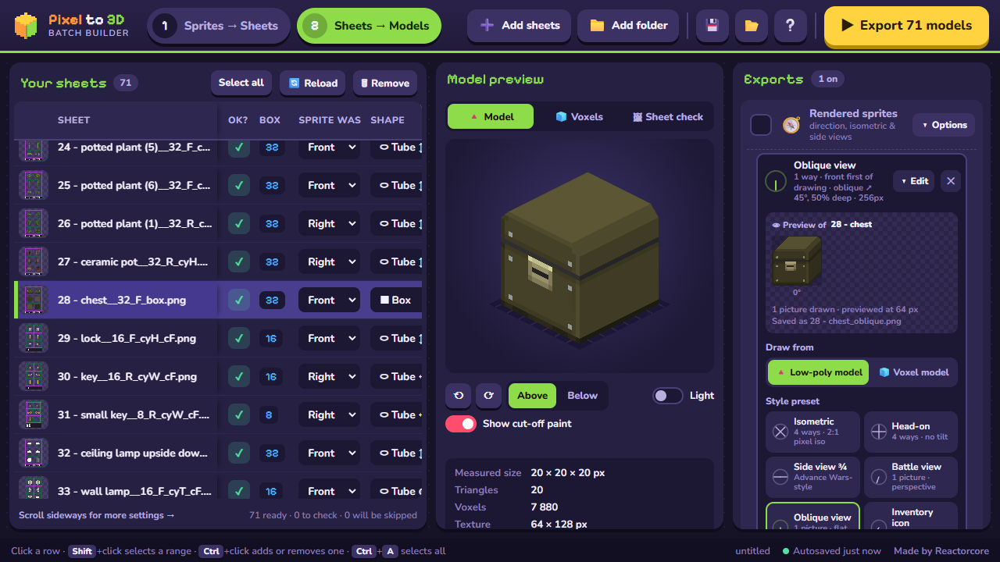

Pixel to 3D Batch Builder
Turns flat pixel-art sprites (up to 128 × 128) into rough-draft 3D models in the SNES / N64 / PS1 style, lots at once: low-poly GLB models, MagicaVoxel models, and 2D extras such as rendered sprite sheets and turntable GIFs. It works in two steps: ① every sprite becomes a sheet showing all six sides, which you can touch up in your own art program, and ② the sheets become models.
Quick start
- Unzip the download anywhere and run Pixel to 3D Batch Builder.exe. The first time, it opens an example batch of 71 sprites to play with. Click around: every button and column explains itself when you hover it.
- To start your own batch, click Select all then 🗑 Remove (your files are never touched), then ➕ Add sprites or drop PNG files on the window.
- For each sprite, set its Thickness, which side it shows (Sprite shows) and a Shape. Select many rows to change them all at once.
- Press ▶ Make N sheets. Then (optionally) open the sheets in your art program and fix whatever the program couldn't guess. See How to paint a sheet.
- Press Go to ② →, tick the exports you want on the right, and press ▶ Export N models. Done!
An unpainted sheet is fine too: if the sprite alone says enough, go straight from ① to ②.
- What's in the folder
- ① Sprites → Sheets
- Shapes
- Thickness & box size
- Painting
- ② Sheets → Models
- Exports
- Lists & sessions
- Godot preview
- Command line
- Troubleshooting
📦What's in the folder
| File or folder | What it is |
|---|---|
| Pixel to 3D Batch Builder.exe | The program. No installing: it runs from wherever you unzip it, and you can move or copy the whole folder. |
| guide/ | This guide and How to paint a sheet. The ❔ button in the program opens this page; the button in ① opens the painting guide. |
| examples/ | The example batch the program opens on its first start: 71 sprites, their sheets and a session with settings for each. |
| presets/ | Sprite set presets (one small file each), inside-style colours and palettes. Your own presets are saved here too, as my-….json. |
| godot-preview/ | A ready-made Godot project for looking at your models under real game-engine lighting. |
| cli/ and CLI.md | A command-line version, mainly for AI helpers and scripts. Needs Node.js. |
| settings/ | Made by the program on its first start: the autosave and its browser engine's data. Delete it to start completely fresh (the example opens again). |
1Sprites → Sheets

Adding sprites
➕ Add sprites picks files, 📁 Add folder adds every PNG directly inside a folder (not its sub-folders), or just drop files and folders anywhere on the window. Sprites must be PNGs with a see-through background, at most 128 × 128 pixels. A sprite that's too big gets a red ✖ and is skipped.
If a file name ends with a side code, Sprite shows is filled in for you (marked 🏷): _F Front, _Bk Back, _L Left, _R Right, _T Top, _Bt Bottom. So sword_R.png is a sword drawn from its right side.
The settings for each sprite
| Column | What it does |
|---|---|
| Thickness | How many pixels thick the object is: the one size a flat picture can't tell. A sword might be 2, a crate as thick as it is wide, a ball as thick as it is tall. |
| Sprite shows | Which side of the object your drawing is: Front, Back, Left, Right, Top or Bottom. Left and Right are as seen when you face the object's front. This decides which way is up. |
| Shape | How the object is rounded where your drawing can't show it. See Shapes. |
| Ends | Tube and Diamond only: round or point one end or both, for bullets, stakes, pencils, capsules. |
| Outline | Tick it when your sprite has a dark 1-pixel outline. The program then looks past the outline for the real colours, and draws a fresh outline round the sides it works out. |
| Copy sides | Puts your drawing on every side (turned to face it) instead of working the sides out. Good for things that look much the same all round: crates, boulders. |
| Model size, Box, OK? | Read-only: the object's size in pixels, the size of the sheet's boxes, and whether the row is ready (✓) or has a problem (✖, hover it for the fix). |
Where the sheets go
Under the preview, Where sheets go holds the sheets folder (asked for on the first run if you haven't picked one). Three switches matter:
- Never overwrite a painted sheet (on): if a sheet with that name already exists, it's kept and the new one gets a number (
rifle_2__32_R_cyW.png), so you never lose painting work. - Also add finished sheets to ② (on): the new sheets go straight into the ② list, with a Go to ② → button.
- Sheet frame: the colour of the lines between the boxes. The program never reads them, so pick whatever is easiest on your eyes.
Changed your mind? Just run ① again
Picked the wrong thickness or shape? Change it in ① and press Make sheets again. A sheet ① already put in ② is remade in place: its ② row gets the new sheet and keeps every ② setting you gave it, and the old file moves into a replaced folder next to it (nothing is ever thrown away). Sheets whose sprite and settings didn't change are left alone.
A sheet you've painted on is never replaced, whatever you do in ①. The new sheet is saved next to it with a number, and its ② row goes right below the painted one, with the same ② settings. So you can try things freely before painting, and your painting is safe after.
Keep the sheets' file names. The part after the double underscore, like __32_R_cyW, stores the box size, side and shape. A renamed sheet still loads, but its side and shape become guesses you have to set in ②.
⬭Choosing a shape
Your sprite shows one side; the shape decides how the rest is rounded. The arrows are about your drawing as you see it: ↔ runs along its width, ↕ along its height, ⊙ straight out of the picture towards you. Each slice is rounded on its own, so a rifle with Tube ↔ gets a round barrel and a separately rounded stock.
| Shape | Good for |
|---|---|
| ■ Box | Crates, walls, books, signs, anything flat-sided. The safe default. |
| ▢ Soft box | Boxes with rounded-off edges: cushions, chests, soap. |
| ⬭ Tube ↔ | Things lying along the drawing's width: gun barrels and swords drawn from the side, logs, pipes. |
| ⬭ Tube ↕ | Things standing up: bottles, mugs, barrels, lamps, tree trunks, potted plants. |
| ⬭ Tube ⊙ | Round things drawn face-on: wheels, coins, tyres, shields, buttons. |
| ◆ Diamond ↔ / ↕ / ⊙ | The same three directions with a pointed cross-section: blades, crystals, arrowheads. |
| ● Egg / ball | Rounded in every direction: balls, eggs, boulders, blobs, rugby balls. |
| ◈ Gem | Pointy in every direction: cut gems, double pyramids, faceted rocks. |
Ends (Tube and Diamond): Flat, or one end, or both, named by the arrow of the shape (← Left / → Right / ↔ Both for ↔ shapes, ↑ Top / ↓ Bottom / ↕ Both for ↕, ⊙ Front / ⊗ Back / ⊙⊗ Both for ⊙). A bullet drawn end-on as a circle, with Tube ⊙ and its front end rounded, becomes a real bullet.
Not sure? Try two shapes and compare the sheets in the preview, or the models in ②. Things with a complicated 3D structure (a potted plant with winding branches) won't come out perfect with any shape: that's what painting the sheet is for.
▣Thickness and box size
Every sheet is made of six square boxes, one per side, all the same size: the object's largest size (width, height or thickness) rounded up to 8, 16, 32, 64 or 128. The spare room lets you make the object bigger while painting. The same sizes make good voxel models. A rough guide:
8 – 16
Small props, items, pickups, projectiles, tiny retro characters. Fast to make; every pixel counts.
32
The sweet spot: characters, enemies, furniture, vehicles, scenery pieces. Enough room for recognisable details.
64
Big or important things: bosses, detailed vehicles, building fronts. More detail, more work to paint, slower to build.
128
The limit: huge pieces and showcase models. Builds take a few seconds each, and it starts to feel less "pixel".
Keep things that belong together at the same scale (one sprite pixel = one model pixel), and they'll fit together in your game.
✎Painting the sheets (optional)
Open a sheet in any art program that saves PNGs with transparency (Aseprite, Paint.NET, Paint Shop Pro, …), paint the sides the program couldn't guess, and save over the same file. Paint adds to the shape, erasing cuts into it. The rules are short but they matter; they're all in How to paint a sheet (also the button under the ① preview): which way each box faces, why the sides must agree, and settings for your art program.
While the program is open, sheets in the ② list are read again every time you save them, so you can keep both windows side by side: paint, save, look.
2Sheets → Models

Sheets made in ① arrive here by themselves. You can also add sheets with ➕ Add sheets, 📁 Add folder or by dropping them on the window. A sheet that was resized or cropped can't be read: it gets a ✖ saying what's wrong.
Two tags on a row link it back to ①, for sheets ① made:
- out of date ↻ (next to OK?): the sprite or its ① settings changed since this sheet was made. Click it to remake the sheet; the row keeps its settings.
- changed ↻ (orange, next to Shape or Ends): you picked a different shape here than the sheet was made for, so the sheet's new sides may not fit it. Click it to use your choice in ① too and remake the sheet to match.
🔄 Reload only reads the sheet files from disk again (for changes saved in your art program); the desktop app already does that by itself. To make a sheet again from its sprite, use the tags above or run ① again.
The preview
- 🔺 Model is the low-poly model, exactly what the GLB file holds. 🧊 Voxels is the voxel version (the
.voxfile), with a Peel slider to slice it open and see the inside. 🖼 Sheet check is your sheet with any cut-off paint blinking red. - ⟲ ⟳ turn the model an eighth at a time, Above / Below moves the camera, and Light switches to a pale background for dark models.
- The numbers underneath give the measured size, triangles, voxels and texture size.
The settings for each sheet
Every column has a tooltip. The list scrolls sideways; hold the middle mouse button over it and move, or use Shift + the wheel.
| Column | What it does |
|---|---|
| Sprite was, Shape, Ends | Read from the file name (tagged name); change them here to try something else without making a new sheet. |
| Round sides | How many flat sides round shapes get. 8 is the classic PS1 look; 12–16 for smooth balls. |
| Straighten slopes | How much pixel staircases are smoothed into straight slopes. 0 keeps every pixel step; higher values lose 1-pixel details. |
| Split ↔ ↕ ⊙, Blend | Only matter when opposite boxes of a sheet are painted differently: where the front part ends and the back part starts (0.5 = halfway), and whether the change is a sudden step or terraces. Split ↕ also sets how deep a hole painted on Top goes (mugs, buckets). See section 4 of the painting guide. |
| Gap colour | Where a spot no box painted takes its colour from: the opposite box, or the nearest painted pixel. |
| Material, Metal, Rough | How the 3D model reflects light: Matte, Plastic, Dull metal, Shiny metal or Unlit (flat colours, very PS1). Metal and Rough fine-tune it. |
| Inside, colours, Noise, Pattern, Hollow core | What the voxel model looks like when cut open: like the outside, solid, hollow, speckled, onion layers, tree rings, layer cake, crystal, marble swirl, flesh & bone, machine. Hollow core leaves the middle empty with walls of that thickness. Only the .vox file has an inside. |


Cut-off paint (⚠)
The model is only solid where all the boxes that can see a spot agree. Paint that the other boxes don't back up is left out, and the row gets a ⚠ with the number of pixels. Show me points at them. Paint the matching area on the other sides, or erase the extra. A ⚠ row still exports; it's a heads-up, not an error.
⇩Exports
Tick the exports you want in the right-hand column; ▾ Options opens each one's settings, with a live preview of the selected sheet. One run makes every ticked export for every ready sheet, into the ② output folder (with One folder per model, each model gets its own sub-folder). Files are named after the sheet: rifle.glb, rifle.vox, rifle_isometric.png.
| Export | What you get |
|---|---|
| 🔺 3D model | A .glb with its texture (crisp pixels, no blur) for Godot, Unity, Blender and most 3D tools. Size (pixels per metre), pivot point, and optional surface detail: Bumpy surface (a normal map in six styles, with Grit), Crevice shadows, Shiny trims. |
| 🧊 Voxel model | A .vox for MagicaVoxel and other voxel tools, inside included. Over 255 colours: merge similar ones, or skip the file and say so. |
| 6 side pictures | Each side as a PNG, cropped to the model. |
| Rendered sprites | The model rendered as pixel-art sprite sheets from several angles. Add as many sprite sets as you like, each from a preset (Isometric, Head-on, Side view ¾, Battle view, Oblique view, Inventory icon, Doom-style, RPG Maker MV/MZ, Diablo-style, Classic RTS) or your own settings. Draw from picks the low-poly or the voxel model. The Camera is Flat (sizes stay the same, for tile games), Perspective (a real lens, near parts bigger) or Oblique: your drawing stays flat-on, exactly as drawn, while the depth slants up to one side so the top and one end show, the look of hand-drawn side views like Advance Wars' battle scenes. Picture size goes up to 1024 px, with quick picks from 32 to 1024. ⭐ Save as my preset keeps your settings for next time. |
| Sprite stack strip | One-pixel layers side by side, for "sprite stacking" fake-3D games. |
| Turntable GIF | A spinning loop of the model, nice for itch.io pages and posts. Camera height, frame count, size. |
| Colour palette | The model's colours as .gpl (GIMP, Aseprite, Krita) and/or .hex. |

Pixel-perfect look (at the bottom of the exports) applies to rendered sprites and the turntable: 1-pixel outlines, flat or banded lighting, snapping colours to the model's own palette, and a fix for dropped pixels at odd angles.
☰Lists, selecting and sessions
- Select like in a file explorer: click a row, Shift+click for a range, Ctrl+click to add or remove one, Ctrl+A for all, arrow keys to move, Esc to go back to one row, Delete to remove.
- Mass edit: with several rows selected, changing a setting on any of them changes all of them. A banner says when that's the case.
- Sessions: 💾 saves both lists and every setting into one
.p3d.jsonfile; 📂 opens one. Pictures are stored as paths relative to the session file, so keep them together. - Autosave: the program saves your work as you go and picks up where you left off, even after a crash. There's no "New": the list is your workspace. To start over, Select all and Remove (in both tabs).
- Live files: sprites and sheets in the lists are read again when you save them in your art program.
🎮Seeing your models in a game engine
The program's Model view is a quick preview. To see models under real lighting, with each surface-detail map switchable, use the godot-preview folder: download Godot 4 (free, no installer), import the folder once, press Play, and drop your exported models on the window or pick their folder. Step-by-step: godot-preview/model-preview-in-godot-guide.html.
⌨The command-line tool
cli/p3d.mjs does what the two Run buttons do, without the window: a folder of sprites in, sheets and models out, or a saved session run exactly as the program would. It's meant for AI helpers such as Claude and for scripts, so you can say "make models from the sprites in this folder" in another project. It needs Node.js (version 20 or newer). CLI.md explains everything; point your helper at it.
?Troubleshooting
| Problem | What to do |
|---|---|
| "Windows protected your PC" | The program isn't signed with a paid certificate, so Windows SmartScreen asks first. Click More info, then Run anyway. |
| The window doesn't open | The program uses Microsoft's WebView2, which comes with Windows 11 and up-to-date Windows 10. If it's missing, install the "Evergreen" WebView2 Runtime from Microsoft. |
| A red ✖ on a row | Hover it: it says what's wrong and how to fix it (sprite over 128 × 128, a resized or cropped sheet, a fully see-through picture). ✖ rows are skipped. |
| ⚠ cut-off paint | See Cut-off paint above, and section 3 of the painting guide. |
| A round thing looks too blocky or too heavy | Change Round sides (more = rounder, more triangles) and Straighten slopes in ②. |
| The model is upside down or sideways | Check Sprite shows (① or ②): it decides which way is up and front. |
| Metal looks dark in my game engine | Metal shows its colour by reflecting the surroundings; give your scene a sky or environment light, or use a non-metal material. |
| Start completely fresh | Close the program and delete (or rename) its settings folder. |